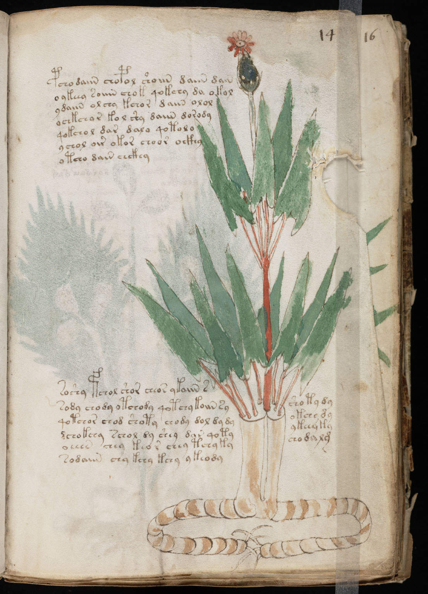

f14r
1pchodaiin chopol shoiin daiin dain2o ykeey soiiin chok qokchy da okol3ydaiin olchy kchor daiin olol4ochkchar kol shy daiin dorody5qokchol dar dala qotolo6ychol oir okor choor ockhy7otcho dain chckhy8soshy fchol shor cheor ykaiin s9sody chody otchody qotchy koiin syshoty dy10qotchor chod shoty chody dol dy dyokchy dy11dchokchy schol dy shey dar qotyykeey ky12oeeen chey teor chey tchy kychodalg13sodaiin chy kchy kchy ykeody
